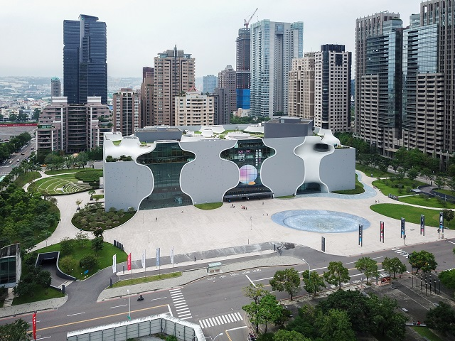
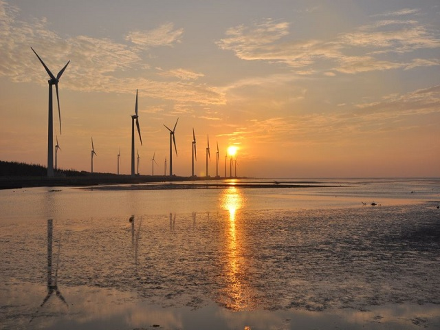

Taichung

Food:
大甲奶油酥餅(Dajia Butter Puff)
 Butter Puff is arrive from Maltose cracker sandwich, but making it with lard. InTaiwan, it often appears on traditional festivals, and
is the popular souvenir in Taiwan. Certainly, it's also good to taste.
Butter Puff is arrive from Maltose cracker sandwich, but making it with lard. InTaiwan, it often appears on traditional festivals, and
is the popular souvenir in Taiwan. Certainly, it's also good to taste.
Butter Puff is arrive from Maltose cracker sandwich, but making it with lard. InTaiwan, it often appears on traditional festivals, and
is the popular souvenir in Taiwan. Certainly, it's also good to taste.
Attractions:
台中國家歌劇院(Taichung National Theater)

One of the most popular Attractions in Taiwan, not only for its design features
but also for the great opera in this theater. The best to visit in Taichung.
高美濕地(Gaomei Wetland)

You can see the sunset here, but the natural scenes and the sea breeze are the best sensory enjoyment.
You can also see some craps taking a walk here, how adorable.